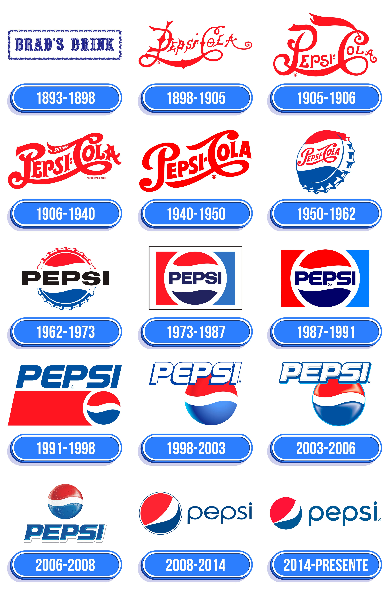

Linha do Tempo da Pepsi
- 1893: A Pepsi é inventada pelo farmacêutico Caleb Bradham na Carolina do Norte, EUA.
- 1903: A marca Pepsi-Cola é registrada.
- 1931: A empresa entra em falência devido à Grande Depressão e é adquirida por Charles G. Guth.
- 1936: A Pepsi-Cola Company introduz a primeira lata de 12 onças.
- 1964: A Pepsi é a primeira empresa ocidental a entrar na União Soviética.
- 1975: A PepsiCo é formada após a fusão da Pepsi-Cola Company com a Frito-Lay, Inc.
- 1985: A Coca-Cola lança a New Coke, resultando em uma "Guerra dos Refrigerantes" com a Pepsi.
- 1996: A PepsiCo adquire a marca de refrigerantes russa Lebedyansky.
- 2008: A Pepsi lança sua campanha "Refresh Everything".
- 2023: A Pepsi apresenta um novo logotipo e identidade visual.
